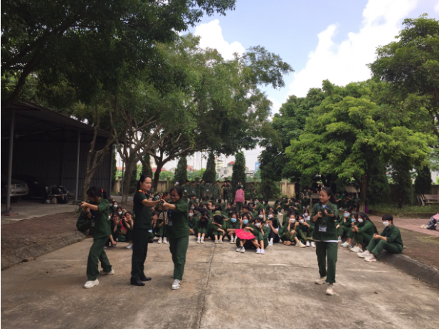

TỔ CHỨC TUẦN SINH HOẠT CHÍNH TRỊ - GDQP-AN ĐẦU KHÓA CHO HỌC SINH TRUNG CẤP VÀ THPT+TRUNG CẤP NĂM HỌC 2022 - 2023
Thực hiện Kế hoạch số 63/KH-CĐKTKT ngày 27/7/2022 của Hiệu trưởng trường Cao đẳng Kinh tế - Kỹ thuật Vĩnh Phúc về việc tổ chức “Tuần sinh hoạt chính trị đầu khóa khối trung cấp và THPT+Trung cấp năm học 2022 - 2023” , từ ngày 08/8/2022 đến ngày 15/8/2022. Sáng ngày 08 tháng 8 năm 2022, tại Hội trường lớn, trường Cao đẳng Kinh tế - Kỹ thuật Vĩnh Phúc đã tổ chức “Tuần sinh hoạt chính trị đầu khóa” cho cho hơn 1.100 học sinh trúng tuyển trung cấp và THPT+Trung cấp năm học 2022 - 2023.
Đến dự buổi khai mạc tuần sinh hoạt chính trị đầu khóa có thầy Nguyễn Văn Đồng - Phó Hiệu trưởng nhà trường, lãnh đạo phòng, khoa, trung tâm, giáo viên chủ nhiệm, giáo viên bộ môn.
Sinh hoạt chính trị đầu khóa có ý nghĩa quan trọng đối với học sinh, sinh viên được diễn ra hàng năm. Các nội dung học tập có liên quan trực tiếp đến cuộc sống sinh hoạt cũng như việc học tập, rèn luyện của học sinh trong các năm học tại trường. Trong thời gian học tập, các học sinh được nghe phổ biến về một số nội dung trọng tâm của năm học 2022- 2023; Quy chế đào tạo; Quy chế HSSV, chế độ chính sách cho HSSV, nâng cao giáo dục ý thức đạo đức cho HSSV về an toàn giao thông và bạo lực học đường, vai trò của HSSV về vấn đề bảo vệ Tài nguyên - Môi trường trong giai đoạn hiên nay, công tác Đoàn và phong trào hoạt động của ĐV, thanh niên…
Cô Lường Thị Pó thảo luận vai trò của HSSV về vấn đề bảo vệ Tài nguyên - Môi trường trong giai đoạn hiên nay
Tuần sinh hoạt chính trị đầu khóa là thời gian khởi đầu quan trọng đối với các học sinh. Với việc tổ chức Tuần lễ sinh hoạt chính trị đầu khóa, Nhà trường tin tưởng các học sinh sẽ được tiếp nhận đầy đủ các thông tin và thực hiện tốt các quy định của Nhà trường, đồng thời khẳng định, giảng đường trường Cao đẳng Kinh tế - Kỹ thuật Vĩnh Phúc mà các em đã sáng suốt lựa chọn sẽ là bệ phóng để các học sinh học tập rèn luyện và hoàn thiện bản thân cả về tri thức và nhân cách, sẵn sàng tự tin hội nhập
Sau đây là một số hình ảnh của “ Tuần sinh hoạt chính trị đầu khóa năm học 2022 - 2023”:
Cô Nguyễn Thúy Tươi - GV bộ môn GDQP-AN đang hướng dẫn học sinh